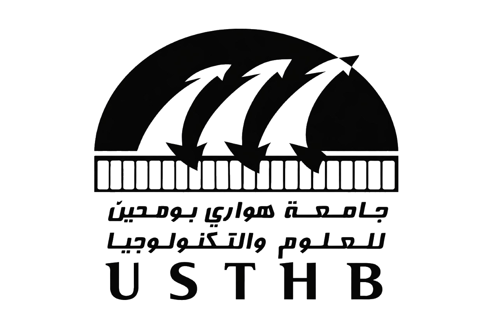

Universite de Science et de la Technologie Houari Boumediene
Bienvenue sur la page de description de l'USTHB.
L'université des sciences et de la technologie Houari-Boumédiène, est la plus grande université d'Afrique située dans la commune de Bab Ezzouar
à une quinzaine de kilomètres à l'est de la capitale Alger en Algérie.
Étudiants : 32500
Création : 25 avril 1974
L'USTHB (Université des Sciences et de la Technologie Houari-Boumédiène) propose une large gamme de spécialités en licences et masters dans les domaines
scientifiques et techniques.
Les facultés principales incluent les Sciences et Technologie (ST), l'Informatique et les Mathématiques (MI), la Biologie (SNV), la Physique, la Chimie,
le Génie Civil et les Sciences de la Terre.
Retour à l'accueil